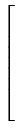
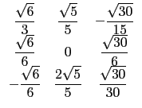
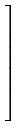
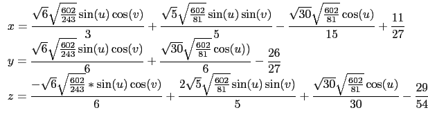

suivant: Les expressions de plusieurs
monter: Les formes quadratiques
précédent: Tracé d'une quadrique :
Table des matières
Index
Réduction d'une quadrique : reduced_quadric quadrique_reduite
quadrique_reduite a un ou deux arguments : l'expression d'une
quadrique et le vecteur de composantes les variables utilisées si il est
différent de [x,y,z].
quadrique_reduite renvoie une liste d'éléments :
- l'origine,
- la matrice d'un repère dans lequel la quadrique est réduite,
- 0 ou 1 (0 si la quadrique est dégénérée),
- l'équation réduite de la quadrique dans ce repère,
- un vecteur contenant son équation paramétrique
ou ses équations paramétriques si la quadrique est composée de plusieurs
nappes.
Attention ! les équations paramétriques sont écrites à l'aide des
variables u,v : ces variables doivent donc être libres (purge
u,v avant d'appeler quadrique_reduite).
On tape :
quadrique_reduite(7*x^2+4*y^2+4*z^2+ 4*x*y-4*x*z-2*y*z-4*x+5*y+4*z-18)
On obtient une liste contenant :
- L'origine du repère (centre de symétrie de la quadrique) :
[11/27,(-26)/27,(-29)/54],
- La matrice de passage :
[[(sqrt(6))/3,(sqrt(5))/5,(-(sqrt(30)))/15], [(sqrt(6))/6,0,(sqrt(30))/6], [(-(sqrt(6)))/6,(2*sqrt(5))/5,(sqrt(30))/30]],
- 1 donc la quadrique n'est pas dégénérée
- l'équation réduite de la quadrique dans ce repère :
0,9*x^2+3*y^2+3*z^2+(-602)/27,
- l'équation paramétrique de la quadrique (dans le premier repère),
de paramètres [u,v] :
[[(sqrt(6)*sqrt(602/243)*sin(u)*cos(v))/3+
(sqrt(5)*sqrt(602/81)*sin(u)*sin(v))/5+
((-(sqrt(30)))*sqrt(602/81)*cos(u))/15+11/27,
(sqrt(6)*sqrt(602/243)*sin(u)*cos(v))/6+
(sqrt(30)*sqrt(602/81)*cos(u))/6+(-26)/27,
((-(sqrt(6)))*sqrt(602/243)*sin(u)*cos(v))/6+
(2*sqrt(5)*sqrt(602/81)*sin(u)*sin(v))/5+
(sqrt(30)*sqrt(602/81)*cos(u))/30+(-29)/54],
u=(0 .. pi),v=(0 .. (2*pi)),ustep=(pi/20),
vstep=((2*pi)/20)]]
Donc la quadrique est un ellipsoïde eta pour équation :
9*x2 +3*y2 +3*z2 + (- 602)/27
dans le repère d'origine
[11/27,(- 26)/27,(- 29)/54]
de matrice de passage P est :

Son équation paramétrique est :

Remarque :
Lorsque la quadrique est dégénérée en 1 ou 2 plan(s), chaque plan
n'est pas donné par son équation paramétrique mais par la liste
constituée par un vecteur normal au plan et un point du plan.
On tape :
quadrique_reduite(x^2-y^2+3*x+y+2)
On obtient :
[[(-3)/2,1/2,0],[[1,0,0],[0,1,0],[0,0,-1]],0,x^2-y^2, [hyperplan([1,1,0],[(-3)/2,1/2,0]), hyperplan([1,-1,0],[(-3)/2,1/2,0])]]
suivant: Les expressions de plusieurs
monter: Les formes quadratiques
précédent: Tracé d'une quadrique :
Table des matières
Index
Documentation de giac écrite par Renée De Graeve